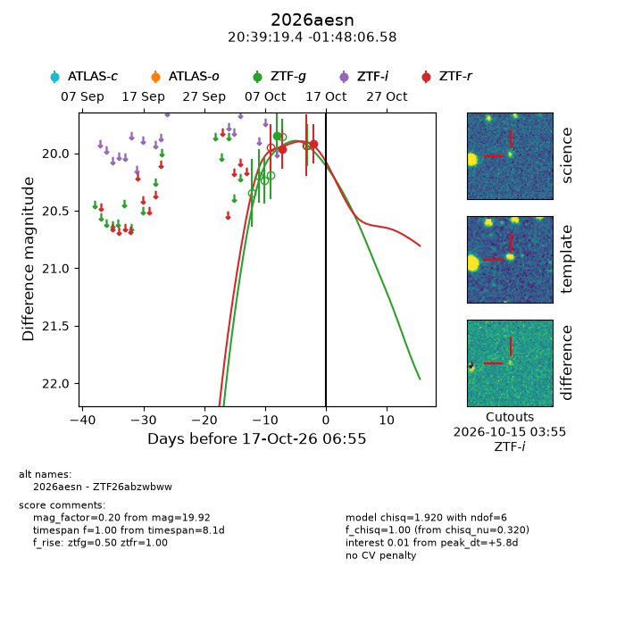
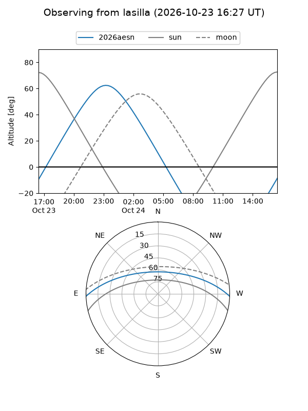
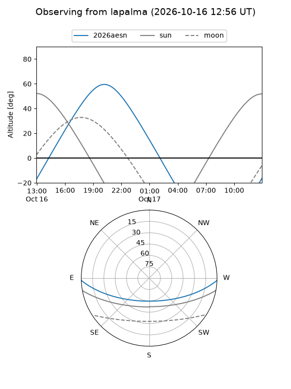
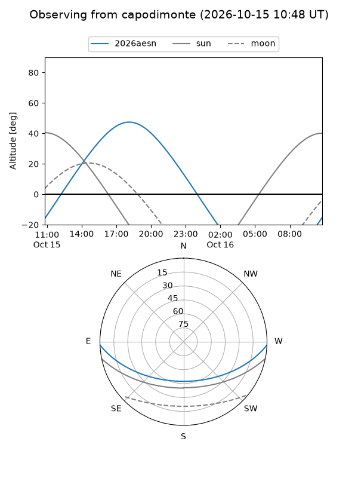
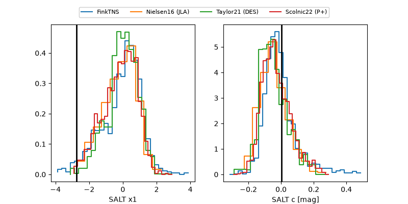

2026aesn
Target 2026aesn at 2026-10-17 06:56
Aliases and brokers:
FINK-ZTF: ztf.fink-portal.org/ZTF26abzwbww
Lasair-ZTF: lasair-ztf.lsst.ac.uk/objects/ZTF26abzwbww
ALeRCE-ZTF: alerce.online/object/ZTF26abzwbww
YSE-PZ: ziggy.ucolick.org/yse/transient_detail/2026aesn
TNS name: wis-tns.org/object/2026aesn
Direct TNS query: direct search
alt names
ZTF26abzwbww (ztf,fink_ztf)
2026aesn (tns,yse)
Coordinates:
equatorial (ra, dec) = 309.8308,-1.80183
equatorial (HMS+DMS) = 20:39:19.39,-01:48:06.58
galactic (l, b) = (44.2768,-24.69494)
Flags:
peak dt: +5.8
Photometry:
last ztfg=19.85, ztfr=19.92
1 ztfg, 2 ztfr detections
Lightcurve

Visibility



Additional plots
